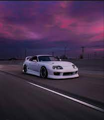

The celicsa super after recieving from the request from the North american to offer a dealer to offer to competitor to the very popolar Datsun 280z. The cellica xx (In japenese ) served as the basis of the Toyato CAL-1 which was introduced at the 1997 tokyo moter show and the cellica xx was introduced later in 1978.
Toyato's created the celicsa super after recieving from the request from the North american to offer a dealer to offer to competitor to the very popolar Datsun 280z. The cellica xx (In japenese ) served as the basis of the Toyato CAL-1 which was introduced at the 1997 tokyo moter show and the cellica xx was introduced later in 1978.
compiteter of mustang dodge
devloped by praveen